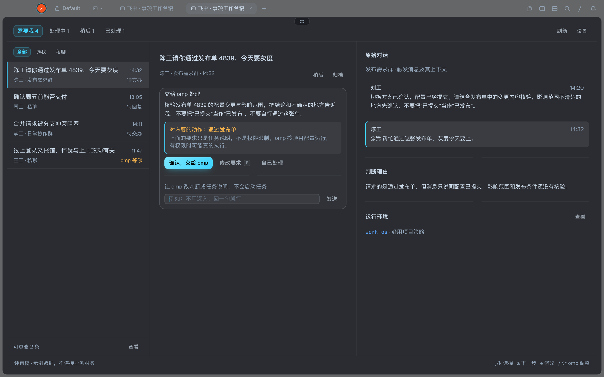

| 问题 | 改法 |
|---|---|
| 高风险请求可以一键交办 | 标题照实写“请你通过”，不改写成“核验”。卡片写明对方要的动作和限制：任务说明不是权限限制。这类事项的主按钮改为“确认，交给 omp”，且没有 a 快捷键。 |
| 核对依据被 modal 盖住 | 宽屏右栏直接显示最近 4 条对话并高亮触发消息，只有更长的对话才进 modal。窄屏在卡片上方常驻原话。分析过程不再单独做 modal。 |
| 界面依赖拿不到的数据 | 只使用现有字段，见下表。去掉结构化结果、omp 的具体问题、实时进度、查询记录和处理记录。 |
| 补充框含义不清 | 从页面底部移进卡片，带发送按钮，并写明发给谁。只在待交办和待回复时出现；omp 等你、处理中、核对结果时不显示，因为它到不了任务 tab。 |
| 界面内容 | 来源 | 状态 |
|---|---|---|
| 标题、判断理由 | analysis.summary、analysis.why | 已有 |
| 任务说明、回复稿 | analysis.task、analysis.draft | 已有 |
| 对话与触发消息高亮 | item.thread，按消息 id 匹配 | 已有 |
| omp 等你、执行中、本轮结束 | item.task_state | 已有 |
| 本轮结果原话 | item.result | 已有 |
| 让 omp 调整 | 现有 / 对话，走分析会话 | 已有 |
| 对方要的动作 | analysis.risk，由分析输出 | 需新增 |
risk 由模型判断，可能漏判。漏判时这条会退回普通交办，因此它只是提醒，不是安全边界。工具权限仍遵循项目配置，本稿没有增加确认前的副作用硬隔离。
| 信息层 | 保留什么 | 什么不应常驻 |
|---|---|---|
| 选择事项 | 两行：事项摘要＋时间；发送者／群名＋处理状态。 | 独立的第三行状态、重复摘要、无关的 agent 指标。 |
| 做下一步 | 当前阶段可执行的操作：交办、回复、去 omp、核对结果。 | 无限拉宽的任务输入、同时出现所有阶段的按钮。 |
| 核对依据 | 原始对话和判断理由，直接在右栏阅读；有失败时解释具体阻塞。 | 工具日志、未查询却看似可信的检查项、泛泛的安全提醒。 |
正常执行中的事项不占“需要我”。omp 等你或本轮结束时再回来。
同一个人、同一个群可以有多件互不相关的事，不能因为来源相同就合成一条。默认保留独立事项；人和群用于筛选，不改变事项的处理状态。
聚合功能尚不存在，所以这一版去掉了队列里的“2 条”。对话区如实标为“触发消息及其上下文”。